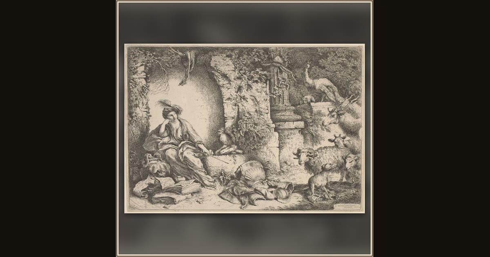

Circe Changing Ulysses' Men into Beasts
Giovanni Benedetto Castiglione · c. 1650 · National Gallery of Art · Washington, D.C., USA
Surrounded by strange animals and magical clutter, the sorceress Circe casts a spell that turns Ulysses's sailors into grunting pigs. Explore its place in Book X of the Odyssey.